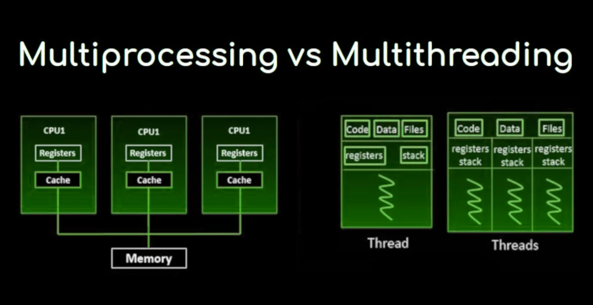
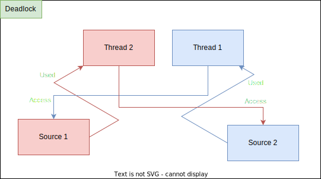
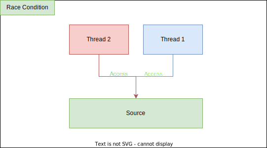

RTOS, "Real-Time Operating System" (Gerçek Zamanlı İşletim Sistemi) anlamına gelir. RTOS'lar, belirli bir zaman diliminde belirli görevlerin yerine getirilmesi gereken sistemlerde kullanılır. Bu tür işletim sistemleri, zamanlama ve görev yönetimi açısından yüksek hassasiyet ve güvenilirlik sunar.
RTOS (Gerçek Zamanlı İşletim Sistemi) üzerinde scheduling algoritmaları, sistemin kaynaklarını etkin bir şekilde yönetmek ve görevlerin zamanında yerine getirilmesini sağlamak için kullanılır. Gerçek zamanlı sistemlerde, görevlerin belirli zaman dilimlerinde veya belirli koşullar altında tamamlanması gerektiğinden, scheduling algoritmaları kritik bir rol oynar.
Preemptive Scheduling (Kesintili Planlama): Bu yöntemde, yüksek öncelikli bir görev, daha düşük öncelikli bir görevi kesebilir. Bu, sistemin daha acil görevleri zamanında yerine getirmesine olanak tanır.
Cooperative Scheduling (İşbirlikçi Planlama): Görevler, kendi kendilerine kontrolü bırakır. Yani, bir görev tamamlandığında veya belirli bir noktada beklemeye geçtiğinde, kontrol diğer göreve geçer. Bu yöntem, daha az kesinti ile çalışır ancak bir görev sonsuz döngüye girerse diğer görevlerin çalışmasını engelleyebilir.
Rate Monotonic Scheduling (RMS): Bu algoritma, görevlerin periyodik olduğu varsayımıyla çalışır ve daha kısa periyotlara sahip görevlere daha yüksek öncelik verir. Bu, sistemin belirli bir zaman diliminde görevlerin zamanında tamamlanmasını sağlar.
Earliest Deadline First (EDF): Bu algoritma, görevlerin son tarihine (deadline) göre önceliklendirilmesini sağlar. En yakın son tarihi olan görev, en yüksek önceliğe sahiptir. Bu, dinamik bir önceliklendirme yöntemidir.
Least Laxity First (LLF): Bu algoritma, her görevin "laxity" (gevşeklik) değerine göre önceliklendirilir. Laxity, bir görevin tamamlanması için kalan süre ile son tarih arasındaki farktır. En düşük laxity değerine sahip görev, en yüksek önceliğe sahiptir.
Fixed Priority Scheduling: Bu yöntemde, her göreve sabit bir öncelik atanır ve görevler bu önceliklere göre planlanır. Bu, sistemin tahmin edilebilirliğini artırır.
Thread (iş parçacığı), bir programın içinde bağımsız olarak yürütülebilen en küçük işlem birimidir. Bir program, bir veya daha fazla iş parçacığı içerebilir ve bu iş parçacıkları, programın belirli görevlerini paralel olarak yerine getirmek için kullanılır. İş parçacıkları, aynı bellek alanını paylaşarak daha hafif bir yapı sunar ve bu sayede daha hızlı ve verimli bir şekilde çalışabilirler.
Multithreading: Bir program içinde birden fazla iş parçacığı (thread) oluşturulmasıdır. İş parçacıkları, aynı süreç içinde çalışır ve bu nedenle aynı bellek alanını paylaşırlar.
Multiprocessing: Birden fazla bağımsız işlem (process) oluşturulmasıdır. Her işlem, kendi bellek alanına ve kaynaklarına sahiptir ve birbirlerinden bağımsız olarak çalışırlar.
Deadlock (kilitlenme), çoklu süreçlerin veya iş parçacıklarının birbirlerini beklemesi sonucu oluşan bir durumdur. Bu durumda, hiçbir süreç veya iş parçacığı ilerleyemez çünkü her biri, diğerinin serbest bırakmasını beklemektedir. Deadlock, genellikle kaynakların paylaşımı sırasında ortaya çıkar ve sistemin verimliliğini ciddi şekilde etkileyebilir.
Race condition (yarış durumu), çoklu süreçlerin veya iş parçacıklarının aynı kaynaklara eriştiği ve bu erişimlerin zamanlamasına bağlı olarak beklenmedik veya hatalı sonuçların ortaya çıkabileceği bir durumdur. Yarış durumu, genellikle paylaşılan kaynakların (örneğin, değişkenler, dosyalar veya bellek alanları) eşzamanlı olarak erişilmesi ve güncellenmesi sırasında meydana gelir.
Semaphore, çoklu iş parçacıkları (thread) veya süreçler (process) arasında senkronizasyon sağlamak için kullanılan bir senkronizasyon aracıdır. Semaphore, belirli bir kaynak veya kaynak grubuna erişimi kontrol etmek için kullanılır ve genellikle bir sayısal değer ile temsil edilir. Bu değer, o an için kaç iş parçacığının veya sürecin kaynağa erişebileceğini gösterir.
Mutex, "mutual exclusion" (karşılıklı dışlama) teriminin kısaltmasıdır ve çoklu iş parçacıkları (thread) veya süreçler (process) arasında senkronizasyon sağlamak için kullanılan bir senkronizasyon aracıdır. Mutex, kritik bölgelere (critical section) erişimi kontrol ederek, yalnızca bir iş parçacığının veya sürecin belirli bir kaynağa aynı anda erişmesini sağlar. Bu, veri bütünlüğünü korumak ve yarış koşullarını (race conditions) önlemek için önemlidir.
| Özellik | Semaphore | Mutex |
|---|---|---|
| Erişim Kontrolü | Birden fazla iş parçacığına izin verir (sayısı belirlenebilir). | Sadece bir iş parçacığına izin verir. |
| Sayı Değeri | Sayı değeri (count) tutar; bu değer, kaynakların sayısını temsil eder. | İki durum (kilitli veya kilitsiz) tutar. |
| Kullanım Amacı | Kaynakların paylaşımını sağlamak ve belirli bir sayıda iş parçacığının aynı anda çalışmasına izin vermek için kullanılır. | Kritik bölgelere erişimi kontrol etmek ve yarış koşullarını önlemek için kullanılır. |
| Performans | Daha fazla esneklik sağlar, ancak daha karmaşık olabilir. | Daha basit ve hızlıdır, ancak yalnızca bir iş parçacığına izin verir. |
| Bekleme Durumu | İş parçacıkları, semaphore değerinin sıfırdan büyük olduğu sürece bekleyebilir. | Bir iş parçacığı, mutex kilitliyse diğer iş parçacıkları bekler. |
| Kullanım Alanları | Üretici-tüketici problemleri, kaynak havuzları gibi durumlarda kullanılır. | Kritik bölge koruma, veri bütünlüğü sağlama gibi durumlarda kullanılır. |